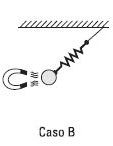
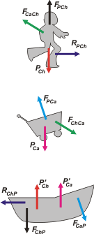

NO ME SALEN
PROBLEMAS RESUELTOS DE FÍSICA DEL CBC
(Leyes de Newton, vínculos)
|
|

|
 |
NMS 1.3- Para las situaciones esquematizadas en la figura, poner en evidencia todas las interacciones presentes.
Caso A: Sobre el señor y sobre la balanza.
Caso B: Sobre la esferita de acero.
Caso C: Sobre la chica y sobre el carrito. |
|
Para este ejercicio te recomiendo fervientemente intentar resolverlo sin ayuda antes de leer esta resolución y comparar tus resultados con los míos.
Es un ejercicio importante, no dejes de analizarlo a fondo, porque es -creeme- muy formativo.
Vamos caso por caso. |

|
Ahí tenés la ilustración que acompaña al enunciado. Para resolverlo tenés que recurrir necesariamente a los diagramas de cuerpo libre (DCL). En este caso tenemos 3 cuerpos (señor, balanza y Tierra), por lo tanto haremos 3 DCLs.
En la inmensa mayoría de los ejercicios de dinámica no es necesario realizar todos los DCLs, sino solamente los de aquellos cuerpos cuya dinámica te interese. El objetivo de este ejercicio es otro, y por eso hacemos todos los DCL de cada cuerpo presente en el sistema analizado. |
|
|
|
Sobre el señor actúan sólo dos fuerzas: su propio peso (que es la fuerza con que lo atrae la Tierra debido al fenómeno de la gravitación), PS (por peso del señor); y la fuerza con que lo sostiene la balanza, FBS (que elegí llamarla así por fuerza que hace la balanza sobre el señor).
Sobre la balanza actúan 3 fuerzas; su propio peso, PB; la fuerza que el señor hace sobre la balanza, FSB; y la fuerza con que el piso sostiene a la balanza, FPB.
Sobre el piso -que forma un solo cuerpo con la Tierra- actúan tres fuerzas: la fuerza que la balanza hace sobre el piso, FBP; la fuerza con que el señor atrae a la Tierra por el efecto de la gravitación, P'S; y la fuerza con que la atre la balanza, P'B.
A cada par de interacción le puse un color diferente para que puedas identificarlos fácilmente. Pero fijate que si sos "orgánico"para ponerle nombre a las fuerzas, es pan comido, los pares son: (FBS y FSB), (FPB y FBP), (PS y P'S) y por último (PB y P'B).
Existe la creencia, ingenua, de que la fuerza que mide la balanza es el peso del señor. Falso: la fuerza que mide la balanza es la que el señor hace sobre su plataforma, FSB, que sólo es igual a su peso si el chabón está quieto, sin acelerarse, ni saltar, ni proferír groserías.
Vamos al caso B. |

|
|
|
 |
Acá hay cinco cuerpos implicados, cuatro de ellos representadoos en la ilustración: el imán, la bolita, el resorte y el techo. Y dos más no representados que son la Tierra y alguien o algo que sostiene el imán, tal vez el hombre invisible.
El piolín que ata al resorte lo fundí con el resorte mismo para no hacer tan complicada la cosa. |
Sobre el techo actúa sólo una fuerza que nos interesa: la fuerza que le ejerce el elástico, Fet. Por supuesto hay más fuerzas que sostienen o traccionan del techo, pero no nos interesan, aunque podrías imaginarlas.
Sobre el elástico actúan dos fuerzas que nos interesan: la fuerza con que lo sostiene el techo, Fte; y la fuerza con que lo jala la bola, FBe; si se trata de un elástico ideal esas dos fuerzas tienen el mismo módulo y el resorte no tiene peso (sólo si se trata de un resorte ideal -reitero- que es lo que vamos a sumir en todo este curso).
Sobre la bola actúan tres fuerzas: su propio peso, PB; la fuerza con que la jala el elástico, FeB; y la fuerza con que la atrae el imán, FiB.
Sobre el imán actún tres fuerzas: su propio peso (que es la fuerza con la que lo atrae la Tierra), Pi; la fuerza con que lo atrae la bola, FBi; y la fuerza con la que alguien o algo lo sostiene, FAi.
A cada par de interacción le puse un color diferente para que puedas identificarlos fácilmente. Pero fijate que si sos "orgánico" para ponerle nombre a las fuerzas, es pan comido. Los pares son: (Fet y Fte), (FeB y FBe), (FiB y FBi), y faltan otros pares que se corresponden con los cuerpos no representados.
Vamos al caso C. |

|
|
 |

|
Acá hay tres cuerpos: la chica, el carrito y el piso. Marchen entonces tres DCLs.
Tené en cuenta que el dibujo no permite reconocer a ciencia cierta la dirección de la fuerza de contacto entre la chica y el carrito... voy a ponerle la dirección más natural. |
|
|
Sobre la chica actúan cuatro fuerzas: su propio peso, PCh; la fuerza que el carrito hace sobre la chica, FCaCh; la fuerza que el piso hace sobre la chica, FPCh; y la fuerza de rozamiento con el piso, RPCh (cuya existencia infiero porque si no sería muy difícil poder empujar el carrito).
Sobre el carrito actúan tres fuerzas: su propio peso, PCa; la fuerza que la chica hace sobre el carrito, FChCa; y la fuerza que el piso hace sobre el carrito, FPCa, que es normal (perpendicular) al piso.
Y sobre el piso (unido a la Tierra) actúan cinco fuerzas: las fuerzas gravitatorias con que la chica y el carrito atraen a la Tierra: P'Ca y P'Ch; la fuerza con que la chica aplasta al piso, FChP; la fuerza con que el carrito pisa al piso, FCaP; y la fuerza con que la chica trata (aún sin saberlo) correr hacia atrás al piso, RChP.
A cada par de interacción le puse un color diferente para que puedas identificarlos fácilmente. Pero fijate que si sos "orgánico" para ponerle nombre a las fuerzas, es pan comido Los pares son: (FCaCh y FChCa), etcétera. |
 |
|
|
Bueno, fue largo pero creo que muy productivo. Te aseguro que muy pocos estudiantes lo intentan, y más o menos el 98,4% cometen errores garrafales. Espero que te aproveche.
|
|
| Algunos derechos reservados, otros no.
Se permite su reproducción citando la fuente. Última actualización feb-15. Buenos Aires, Argentina. |
|
|
|